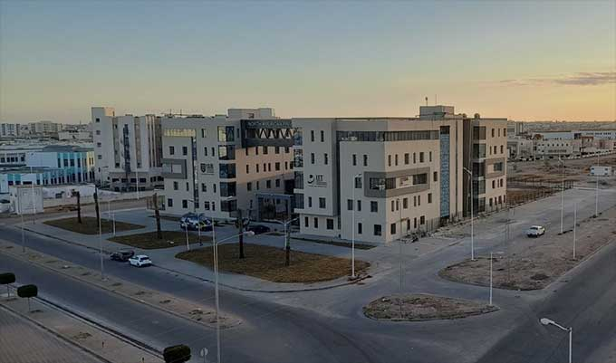
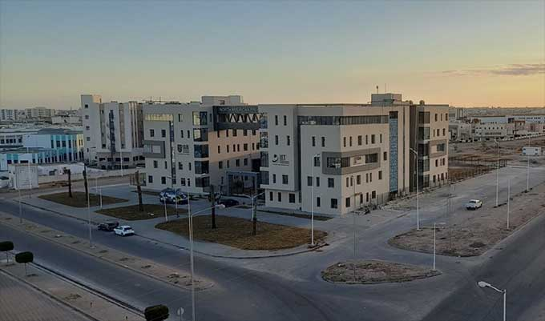

L’Institut International de Technologie (IIT) est une institution d’excellence dédiée à la formation des ingénieurs et des futurs leaders dans le domaine des technologies innovantes. Avec une infrastructure moderne, un corps enseignant hautement qualifié et un environnement académique dynamique, l’IIT offre une expérience unique, alliant savoir, pratique et innovation. Ce cadre inspire ses étudiants à devenir des acteurs de changement, capables de relever les défis du futur.
 
